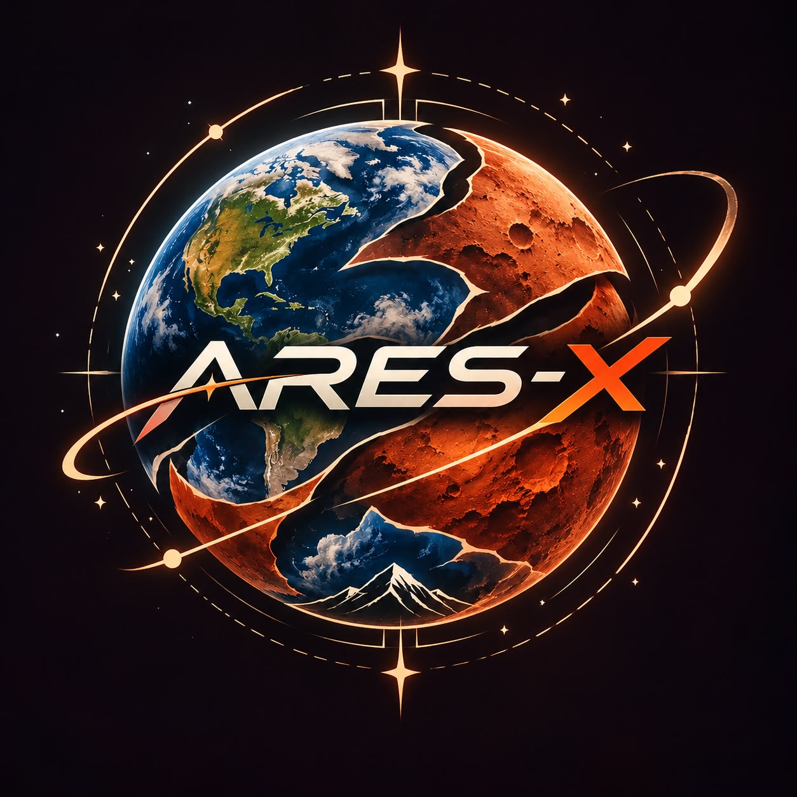

32 lugares increíbles de nuestro planeta que parecen sacados de Marte.
Descubre los paisajes más sorprendentes de nuestro planeta.
Registra un lugar de la Tierra que pueda servir para estudiar o simular condiciones marcianas.
Aunque Marte es un planeta diferente a la Tierra, existen lugares que comparten características sorprendentes. Algunos tienen terrenos áridos, rocas rojizas, volcanes, cráteres, minerales y grandes extensiones desérticas.
Estos paisajes permiten estudiar ambientes extremos de nuestro planeta y comprender mejor cómo podría ser la exploración de Marte.